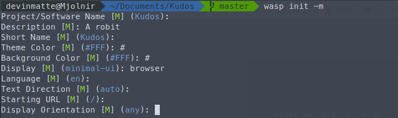

Worked in a three person team of Software Engineers building a customer portal and corresponding server
from the ground up. Worked in PHP using Slim, Javascript, Python, NGINX, MySQL and AWS.
Classroom Technology Support
Rochester, NY — AV Responder
August 2016 - Present
Works as a Audio/Video Technician responding to all university calls regarding immediate issues and
works to provide immediate and long term fixes.
Caraluzzi’s Markets
Newtown, CT— Supervisor
November 2014 - January 2017
Worked as a front end supervisor providing customer service, employee training and maintained front end
order.
Charter Communications
Newtown, CT— Intern
February 2015 - May 2015
Interned in the Community Access Television division of Charter and completed the broadcast training
program.
Projects

wasp
wasp is an Open Source Command line utility I came up with for a few reasons:
To generate manifest.json's from the command line
To work on an open source project with other people, not just alone
Git-Challenge is a web application created to learn how to use rest-ful APIs (GitHub API) as well as to
learn PHP. Point it at a GitHub organization, and it'll rank the contributions of all users in all
repositories. The application can be deployed, either manually or as a container with environment
variables.
Created a company website for my family’s company using Flask and SQLalchemy and designed for optimal
search engine performance. I learned a lot about web design, and working for a client by building this
site.
A calendar generator built for the high school I attended. After it was left neglected, I rebuilt the app
for use by all students and faculty. The app then went through several iterations before I settled down
and redesigned the application for usability via scaling and a clean modern design. The app services
hundreds of students and faculty every year.
Created a Java program used to track equipment leaving and returning to a school organization.
The program was written to serve two purposes, one to help my high school technology team keep track of
equipment as it entered and left the room. As well as for myself to familiarize myself with GUI
interfaces and to overall better learn Java.